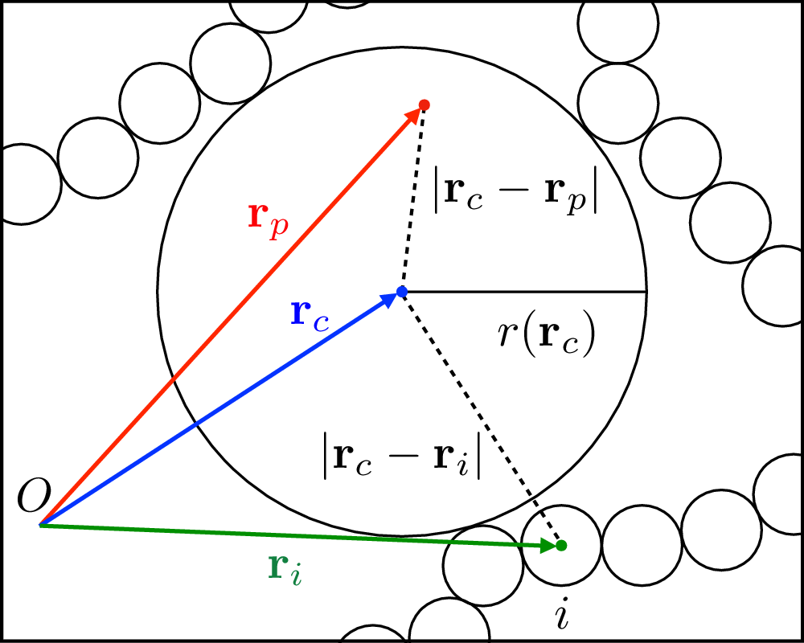

Observables¶
Partition particles into clusters. |
|
Compute the spatial Fourier transform of the van Hove function, also known as the intermediate scattering function (ISF) \(F_c(q, t)\), of a trajectory. |
|
Construct the convex hull of the system, which is the smallest convex set that contains the particles’ coordinates. |
|
Compute the form factor of a system or the average form factor of the molecules contained in the system. |
|
Compute the mean-squared displacement of a trajectory. |
|
Find the pore sizes of a system. |
|
Compute the radial distribution function of a system. |
|
Compute the self part of the spatial Fourier transform of the van Hove function, also known as the intermediate scattering function (ISF) \(F_s(q, t)\), of a trajectory. |
|
Compute the structure factor of a system. |
-
class
baggianalysis.core.BondOrderParameters(self: baggianalysis.core.BondOrderParameters, orders_to_compute: Set[int], compute_avg_qs: bool = True, compute_qs: bool = False, compute_avg_ws: bool = False, compute_ws: bool = False) → None¶ Bases:
pybind11_builtins.pybind11_object-
analyse_system(self: baggianalysis.core.BondOrderParameters, arg0: baggianalysis.core.System) → None¶
-
analyse_trajectory(self: baggianalysis.core.BondOrderParameters, arg0: baggianalysis.core.BaseTrajectory) → None¶
-
reset(self: baggianalysis.core.BondOrderParameters) → None¶
-
result(self: baggianalysis.core.BondOrderParameters) → List[List[float]]¶
-
-
class
baggianalysis.core.ClusterList(self: baggianalysis.core.ClusterList) → None¶ Bases:
pybind11_builtins.pybind11_objectPartition particles into clusters. The
resultof the computation is a list of the sizes of all clusters.The default constructor takes no parameters
-
analyse_system(self: baggianalysis.core.ClusterList, arg0: baggianalysis.core.System) → None¶
-
analyse_trajectory(self: baggianalysis.core.ClusterList, arg0: baggianalysis.core.BaseTrajectory) → None¶
-
property
clusters¶ Return the list of clusters of the system analysed last.
-
reset(self: baggianalysis.core.ClusterList) → None¶
-
result(self: baggianalysis.core.ClusterList) → List[int]¶
-
-
class
baggianalysis.core.CollectiveISF(*args, **kwargs)¶ Bases:
pybind11_builtins.pybind11_objectCompute the spatial Fourier transform of the van Hove function, also known as the intermediate scattering function (ISF) \(F_c(q, t)\), of a trajectory.
The trajectory is split up in chunks of size points_per_cycle, and the collective ISF is computed between configurations in each chunk and between the initial configurations of pairs of chunks for different wave vectors \(q\).
The collective ISF between two configurations is associated to their time delta (i.e. to the difference between the times at which they have been printed) and averaged with all the other pairs that share the same time delta. Note that in same cases (i.e. log or log-linear spacing), there might be time deltas that differ by one: in this case the code consider those pairs to share the same time delta.
Overloaded function.
__init__(self: baggianalysis.core.CollectiveISF, largest_q: float, max_n_realisations: int, max_delta_q: float, points_per_cycle: int) -> None
- Parameters
largest_q (float) – The length of the largest q vector of interest
max_n_realisations (int) – Given a length \(q\), this is the maximum number of q vectors that will be averaged over to compute \(F_s(q, t)\)
max_delta_q (float) – q-vectors that are separated by distances smaller than this value will be assigned to the same value of \(q\)
points_per_cycle (int) – The number of configurations contained in each chunk in which the trajectory is split up.
__init__(self: baggianalysis.core.CollectiveISF, q_vectors: ba::WaveVectorList, points_per_cycle: int) -> None
- Parameters
q_vectors (
WaveVectorList) – The list of q vectors that will be used to compute the collective ISF.points_per_cycle (int) – The number of configurations contained in each chunk in which the trajectory is split up.
-
analyse_and_print(self: baggianalysis.core.CollectiveISF, trajectory: baggianalysis.core.BaseTrajectory, output_file: str, normalise: bool = True) → None¶ Analyse the trajectory and print the collective ISF directly to the given file.
- Parameters
trajectory (
BaseTrajectory) – The trajectory to be analysedoutput_file (string) – The output filename
normalise (bool) – Normalise the correlation functions so that they start from 1 at time zero. Defaults to true.
-
analyse_trajectory(self: baggianalysis.core.CollectiveISF, arg0: baggianalysis.core.BaseTrajectory) → None¶
-
reset(self: baggianalysis.core.CollectiveISF) → None¶
-
result(self: baggianalysis.core.CollectiveISF) → Dict[int, List[float]]¶
-
class
baggianalysis.core.ConvexHull(self: baggianalysis.core.ConvexHull) → None¶ Bases:
pybind11_builtins.pybind11_objectConstruct the convex hull of the system, which is the smallest convex set that contains the particles’ coordinates.
-
analyse_system(self: baggianalysis.core.ConvexHull, arg0: baggianalysis.core.System) → None¶
-
analyse_trajectory(self: baggianalysis.core.ConvexHull, arg0: baggianalysis.core.BaseTrajectory) → None¶
-
reset(self: baggianalysis.core.ConvexHull) → None¶
-
result(self: baggianalysis.core.ConvexHull) → ba::ConvexHullResult¶
-
-
class
baggianalysis.core.ConvexHullResult(self: baggianalysis.core.ConvexHullResult) → None¶ Bases:
pybind11_builtins.pybind11_objectThe actual convex hull.
-
property
area¶ The area of the convex hull.
-
property
vertices¶ The vertices that compose the convex hull. These are a subset of the particles of the system.
-
property
volume¶ The volume of the convex hull.
-
property
-
class
baggianalysis.core.ConvexHullTriangle¶ Bases:
pybind11_builtins.pybind11_objectA triangle of the convex hull mesh. It contains its three vertices as well as its normal (i.e. the normal unit vector pointing outwards).
-
area(self: baggianalysis.core.ConvexHullTriangle) → float¶ Return the area of the triangle.
-
property
normal¶ The unit vector orthogonal to the triangle surface which points towards the exterior of convex hull.
-
property
v1¶ The first vertex.
-
property
v2¶ The second vertex along the counter-clock-wise contour of the triangle.
-
property
v3¶ The second vertex along the counter-clock-wise contour of the triangle.
-
volume(self: baggianalysis.core.ConvexHullTriangle) → float¶ Return the volume of the triangle.
-
-
class
baggianalysis.core.GyrationRadius(self: baggianalysis.core.GyrationRadius, compute_on_molecules: bool) → None¶ Bases:
pybind11_builtins.pybind11_objectCompute the gyration radius of a system or the average gyration radius of the molecules contained in the system.
- Parameters
compute_on_molecules (bool) – If True, the final gyration radius will be computed as the average gyration radius of the molecules composing the system.
-
analyse_particle_set(self: baggianalysis.core.GyrationRadius, p_set: baggianalysis.core.ParticleSet, box: glm::tvec3<scalar, P>) → None¶ Compute the gyration radius of the given
ParticleSet.- Parameters
p_set (
ParticleSet) – The object containing the input particles.box (numpy.ndarray) – The simulation box.
-
analyse_system(self: baggianalysis.core.GyrationRadius, arg0: baggianalysis.core.System) → None¶
-
analyse_trajectory(self: baggianalysis.core.GyrationRadius, arg0: baggianalysis.core.BaseTrajectory) → None¶
-
reset(self: baggianalysis.core.GyrationRadius) → None¶
-
result(self: baggianalysis.core.GyrationRadius) → float¶
-
class
baggianalysis.core.FormFactor(self: baggianalysis.core.FormFactor, q_modules: List[float], q_repetitions: int, compute_on_molecules: bool) → None¶ Bases:
pybind11_builtins.pybind11_objectCompute the form factor of a system or the average form factor of the molecules contained in the system.
The mathematical definition of the form factor is the same as structure factor, with the difference that the form factor is to be intended as the scattering response of single objects. As a result, the size of the simulation box does not set the smallest wave vector that can be used in its computation.
- Parameters
q_modules (List(float)) – The modules of the wave vectors that will be used to compute the form factor.
q_repetitions (int) – The number of random realisations of each wave vector module that will be used to compute the form factor.
compute_on_molecules (bool) – If True, the final form factor will be computed as the average form factor of the molecules composing the system.
-
analyse_particle_set(self: baggianalysis.core.FormFactor, p_set: baggianalysis.core.ParticleSet) → None¶ Compute the form factor of the given
ParticleSet.- Parameters
p_set (
ParticleSet) – The object containing the input particles.
-
analyse_system(self: baggianalysis.core.FormFactor, arg0: baggianalysis.core.System) → None¶
-
analyse_trajectory(self: baggianalysis.core.FormFactor, arg0: baggianalysis.core.BaseTrajectory) → None¶
-
clear_b_factors(self: baggianalysis.core.FormFactor) → None¶ Reset the b-factors to their default values (b = 1 for each particle).
-
reset(self: baggianalysis.core.FormFactor) → None¶
-
result(self: baggianalysis.core.FormFactor) → Dict[float, float]¶
-
set_b_factors(self: baggianalysis.core.FormFactor, b_factors: List[float]) → None¶ Set the particles’ b-factors (that is, the scattering amplitudes) that will be used to compute the form factor.
- Parameters
b_factors (List(float)) – The vector of b-factors to be used in the calculation of the P(q). The length of the vector should be equal to the number of particles in the system.
-
class
baggianalysis.core.MSD(self: baggianalysis.core.MSD, points_per_cycle: int, remove_com: bool = True) → None¶ Bases:
pybind11_builtins.pybind11_objectCompute the mean-squared displacement of a trajectory.
The trajectory is split up in chunks of size points_per_cycle, and the mean squared displacement is computed between configurations in each chunk and between the initial configurations of pairs of chunks.
The mean squared displacement between two configurations is associated to their time delta (i.e. to the difference between the times at which they have been printed) and averaged with all the other pairs that share the same time delta. Note that in same cases (i.e. log or log-linear spacing), there might be time deltas that differ by one: in this case the code consider those pairs to share the same time delta.
- Parameters
-
analyse_and_print(self: baggianalysis.core.MSD, trajectory: baggianalysis.core.BaseTrajectory, output_file: str) → None¶ Analyse the trajectory and print the MSD directly to the given file.
-
analyse_trajectory(self: baggianalysis.core.MSD, arg0: baggianalysis.core.BaseTrajectory) → None¶
-
reset(self: baggianalysis.core.MSD) → None¶
-
result(self: baggianalysis.core.MSD) → Dict[int, float]¶
-
class
baggianalysis.core.ParticleAutocorrelation(self: baggianalysis.core.ParticleAutocorrelation, points_per_cycle: int, function: Callable[[baggianalysis.core.Particle], glm::tvec3<scalar, P>], normalise: bool = False) → None¶ Bases:
pybind11_builtins.pybind11_objectCompute the normalised autocorrelation of particle-related three-dimensional vectors.
The constructor takes a function that will be used on each particle to return the three-dimensional vector whose autocorrelation will be computed. As an example, the two observables defined below will compute the velocity and angular velocity autocorrelation functions:
v_obs = ba.ParticleAutocorrelation(30, lambda p: p.velocity) omega_obs = ba.ParticleAutocorrelation(30, lambda p: p.angular_velocity)
The trajectory is split up in chunks of size points_per_cycle, and the autocorrelation is computed between configurations in each chunk and between the initial configurations of pairs of chunks.
- Parameters
points_per_cycle (int) – The number of configurations contained in each chunk in which the trajectory is split up.
function (callable) – A callable that takes a particle and returns the three-dimensional vector whose autocorrelation will be computed.
normalise (bool) – If True, the the autocorrelation will be normalised (i.e. its value in 0 will be 1). Defaults to False.
-
analyse_and_print(self: baggianalysis.core.ParticleAutocorrelation, trajectory: baggianalysis.core.BaseTrajectory, output_file: str) → None¶ Analyse the trajectory and print the autocorrelation directly to the given file.
-
analyse_trajectory(self: baggianalysis.core.ParticleAutocorrelation, arg0: baggianalysis.core.BaseTrajectory) → None¶
-
reset(self: baggianalysis.core.ParticleAutocorrelation) → None¶
-
result(self: baggianalysis.core.ParticleAutocorrelation) → Dict[int, float]¶
-
class
baggianalysis.core.PoreSize(self: baggianalysis.core.PoreSize, N_attempts: int, r_cut: float = 1.0, particle_radius: float = 0.5, max_time: float = 1.0) → None¶ Bases:
pybind11_builtins.pybind11_objectFind the pore sizes of a system. Requires NLopt.
The pore size distribution \(P_G(r)\) is defined as in Bhattacharya and Gubbins (2006). The algorithm is schematically represented in the following figure (taken from Sorichetti, Hugovieux and Kob (2020), where the algorithm was applied to a polymeric system):
Given a randomly chosen point \(\mathbf r_p\) in the void phase, one has to find the sphere with the largest radius \(r\) containing \(\mathbf r_p\) and which does not overlap with any particle. This problem can be reformulated as that of maximizing the function
\[r(\mathbf r_c) \equiv \min_{i=1,\dots M} \{|\mathbf r_c - \mathbf r_i|\} - \sigma/2, \label{obj_function}\]subject to the constraint
\[|\mathbf r_c-\mathbf r_p| - r(\mathbf r_c) \leq 0,\]where \(\mathbf r_c\) is the position of the sphere’s center and \(\mathbf r_i\) are the positions of the centers of the particles. If the maximization of the function above is carried out for a large enough number of points \(\mathbf r_p\), the resulting (normalized) histogram of \(r\) values will converge to \(P_G(r)\).
The problem of calculating \(P_G(r)\) reduces therefore to a nonlinear optimization problem, which can be solved with a standard algorithm. Here we use the open-source Sbplx algorithm of the NLopt library, which can handle discontinuous objective functions.
The constructur builds an observable that computes
N_attemptsdifferent pore sizes by applying the algorithm described above forN_attemptsrandom values of \(r_p\).- Parameters
N_attempts (int) – The number of pore size evaluations that will be carried out per system.
r_cut (float) – The characteristic size of the particle-particle repulsion. Using the right number will speed up the computation but does not impact the quality of the results.
particle_radius (float) – The radius of the particles stored in the system. This is usually half
r_cut.max_time (float) – The timeout (in seconds) beyond which NLopt will stop looking for a solution to the optimisation problem.
-
analyse_system(self: baggianalysis.core.PoreSize, arg0: baggianalysis.core.System) → None¶
-
analyse_trajectory(self: baggianalysis.core.PoreSize, arg0: baggianalysis.core.BaseTrajectory) → None¶
-
radius(self: baggianalysis.core.PoreSize, centre: glm::tvec3<scalar, P>) → float¶ Calculates the radius of the largest sphere centred in
centrethat does not overlap with any of the particles.- Parameters
centre (numpy.ndarray) – The reference position
- Returns
The radius of the largest sphere centred in
centrethat does not overlap with any of the particles.- Return type
-
reset(self: baggianalysis.core.PoreSize) → None¶
-
result(self: baggianalysis.core.PoreSize) → List[float]¶
{kind=link}
-
class
baggianalysis.core.RDF(*args, **kwargs)¶ Bases:
pybind11_builtins.pybind11_objectCompute the radial distribution function of a system.
Overloaded function.
__init__(self: baggianalysis.core.RDF, arg0: float, arg1: List[str], arg2: List[str]) -> None
__init__(self: baggianalysis.core.RDF, arg0: float) -> None
__init__(self: baggianalysis.core.RDF, arg0: float, arg1: float) -> None
__init__(self: baggianalysis.core.RDF, arg0: float, arg1: float, arg2: List[str], arg3: List[str]) -> None
-
analyse_system(self: baggianalysis.core.RDF, arg0: baggianalysis.core.System) → None¶
-
analyse_trajectory(self: baggianalysis.core.RDF, arg0: baggianalysis.core.BaseTrajectory) → None¶
-
reset(self: baggianalysis.core.RDF) → None¶
-
result(self: baggianalysis.core.RDF) → Dict[float, float]¶
-
class
baggianalysis.core.SelfISF(*args, **kwargs)¶ Bases:
pybind11_builtins.pybind11_objectCompute the self part of the spatial Fourier transform of the van Hove function, also known as the intermediate scattering function (ISF) \(F_s(q, t)\), of a trajectory.
The trajectory is split up in chunks of size points_per_cycle, and the self ISF is computed between configurations in each chunk and between the initial configurations of pairs of chunks for different wave vectors \(q\).
The self ISF between two configurations is associated to their time delta (i.e. to the difference between the times at which they have been printed) and averaged with all the other pairs that share the same time delta. Note that in same cases (i.e. log or log-linear spacing), there might be time deltas that differ by one: in this case the code consider those pairs to share the same time delta.
Overloaded function.
__init__(self: baggianalysis.core.SelfISF, largest_q: float, max_n_realisations: int, max_delta_q: float, points_per_cycle: int) -> None
- Parameters
largest_q (float) – The length of the largest q vector of interest
max_n_realisations (int) – Given a length \(q\), this is the maximum number of q vectors that will be averaged over to compute \(F_s(q, t)\)
max_delta_q (float) – q-vectors that are separated by distances smaller than this value will be assigned to the same value of \(q\)
points_per_cycle (int) – The number of configurations contained in each chunk in which the trajectory is split up.
__init__(self: baggianalysis.core.SelfISF, q_vectors: ba::WaveVectorList, max_n_realisations: int) -> None
- Parameters
q_vectors (
WaveVectorList) – The list of q vectors that will be used to compute the self ISF.points_per_cycle (int) – The number of configurations contained in each chunk in which the trajectory is split up.
-
analyse_and_print(self: baggianalysis.core.SelfISF, trajectory: baggianalysis.core.BaseTrajectory, output_file: str) → None¶ Analyse the trajectory and print the self ISF directly to the given file.
-
analyse_trajectory(self: baggianalysis.core.SelfISF, arg0: baggianalysis.core.BaseTrajectory) → None¶
-
reset(self: baggianalysis.core.SelfISF) → None¶
-
result(self: baggianalysis.core.SelfISF) → Dict[int, List[float]]¶
-
class
baggianalysis.core.StructureFactor(*args, **kwargs)¶ Bases:
pybind11_builtins.pybind11_objectCompute the structure factor of a system.
Overloaded function.
__init__(self: baggianalysis.core.StructureFactor, largest_q: float, max_n_realisations: int, max_delta_q: float) -> None
- Parameters
largest_q (float) – The length of the largest q vector of interest
max_n_realisations (int) – Given a length \(q\), this is the maximum number of q vectors that will be averaged over to compute \(F_s(q, t)\)
max_delta_q (float) – q-vectors that are separated by distances smaller than this value will be assigned to the same value of \(q\)
__init__(self: baggianalysis.core.StructureFactor, q_vectors: ba::WaveVectorList) -> None
- Parameters
q_vectors (
WaveVectorList) – The list of q vectors that will be used to compute the self ISF.points_per_cycle (int) – The number of configurations contained in each chunk in which the trajectory is split up.
-
analyse_system(self: baggianalysis.core.StructureFactor, arg0: baggianalysis.core.System) → None¶
-
analyse_trajectory(self: baggianalysis.core.StructureFactor, arg0: baggianalysis.core.BaseTrajectory) → None¶
-
clear_b_factors(self: baggianalysis.core.StructureFactor) → None¶ Reset the b-factors to their default values (b = 1 for each particle).
-
destructured_from_system(self: baggianalysis.core.StructureFactor, system: baggianalysis.core.System) → baggianalysis.core.DestructuredStructureFactor¶ Compute and return the single-particle contributions (splitted as cosine and sine contributions stored in a
DestructuredStructureFactorinstance) that make up the structure factor.- Parameters
system (
System) – The input system.- Returns
The final result of the computation.
- Return type
-
reset(self: baggianalysis.core.StructureFactor) → None¶
-
result(self: baggianalysis.core.StructureFactor) → Dict[float, float]¶
-
set_b_factors(self: baggianalysis.core.StructureFactor, b_factors: List[float]) → None¶ Set the particles’ b-factors (that is, the scattering amplitudes) that will be used to compute the structure factor.
- Parameters
b_factors (List(float)) – The vector of b-factors to be used in the calculation of the S(q). The length of the vector should be equal to the number of particles in the system.